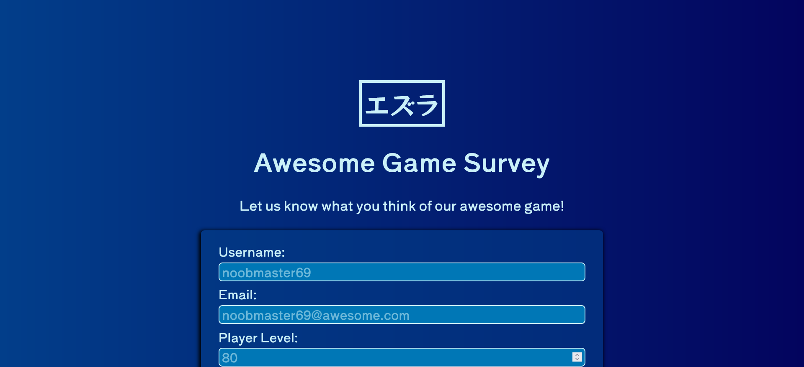
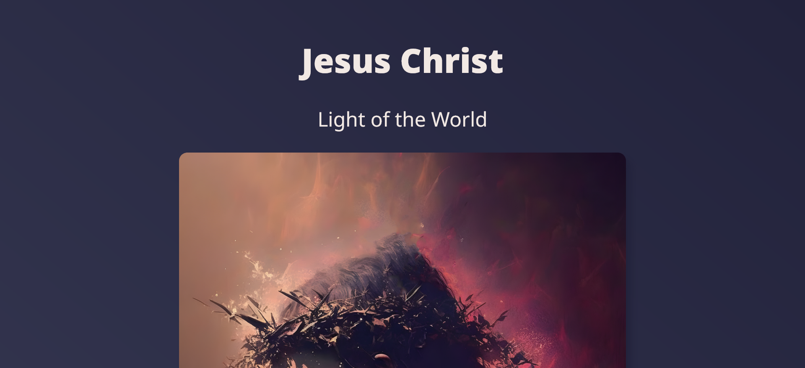
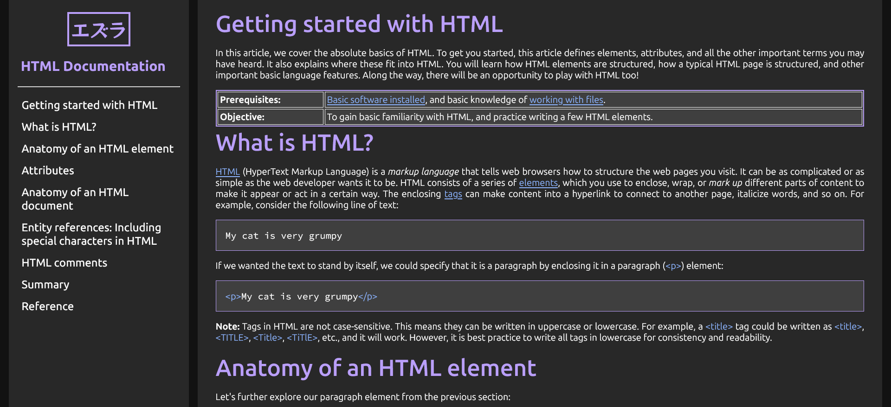
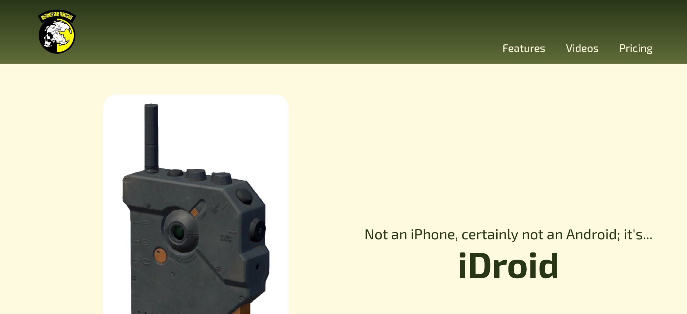

Ezra
Developer. Engineer. Gamer. Bookworm.
Developer.
Engineer.
Gamer.
Bookworm.
A look at the fun things I did while completing freeCodeCamp's projects

Survey Form
Decided to make a survey form that's game-related. Making the choices and fields was an enjoyable experience.

Tribute Page
Made a tribute page for the one who helped me get through difficult times. My simple way of thanks to the King of Kings and the Lord of Lords.

Technical Documentation
A personal take on a section of one of the most helpful references for aspiring developers like me: no other than the MDN web docs.

Landing Page
One of the Metal Gear Solid V's most iconic equipment. When this becomes real, hopefully the prices are more reasonable.